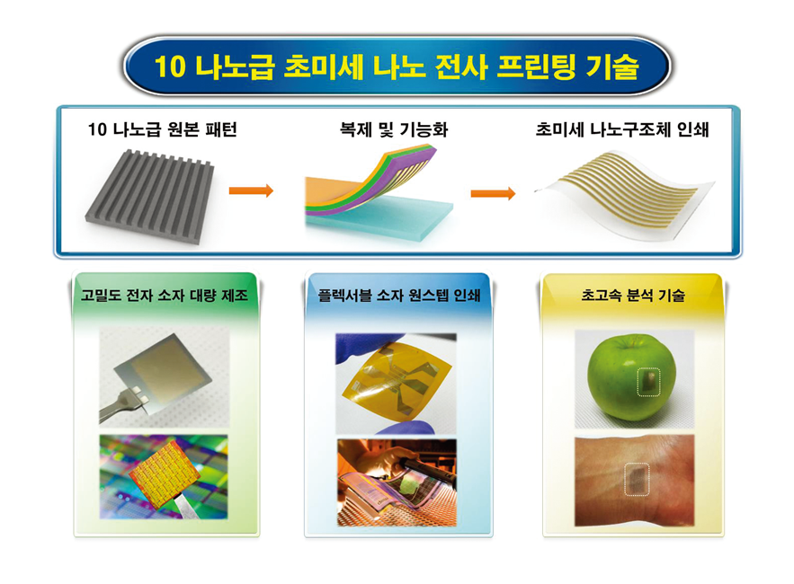

Report by Subjects
Report by Subjects
KAIST RESEARCH ACHIEVEMENTS
Sub-10 nm ultrahigh-resolution printing technology
Department of Materials Science and Engineering
Yeon Sik Jung
Summary
In 2031, an ample supply of low-cost, high-performance nano-transfer printing technology has facilitated the detection and identification of various chemicals, such as disease-causing substances, drugs, and pesticides, for the last 15 years. Upon suspicion that a food has been contaminated by toxic substances, such as pesticide residue, tests can be done easily using detection kits based on printed electronics technology. Furthermore, self-diagnoses for a range of health conditions can be conducted easily with only a drop of blood. This is a revolution in detection and diagnosis technology that has enhanced food safety and promoted public health.
R&D Report
Nano-transfer printing is an effective technology that, through a simple fabrication process, can enable the mass production of transistors, metamaterials, skin sensors, and other next-generation devices. However, printing sub-50 nm structures has not been researched, as it is physically difficult to both replicate and transfer the patterns. Our team has succeeded in realizing a nano-transfer printing technique that is applicable to virtually any surface by using a bilayer polymer that is effective at reproducing sub-10 nm patterns and applying the principle of selectively weakening surface adhesion. This technique was used to fabricate a working high-performance gas sensor that is capable of detecting explosive gases and nondestructively detecting pesticide residue on fruits.
Printed electronics are electronic devices created using a printing fabrication method. Being able to fabricate devices using this method facilitates mass production through automated processes, giving such devices the advantages of being low-cost, environment-friendly, flexible, scalable, and applicable to low-temperature environments and simple processes. Consequently, they are expected to be used in a wide range of applications. The nanotechnology-based printed electronics fabrication method is anticipated to be utilized for a broad range of new products, such as RFIDs, memory chips, displays, batteries, lighting, sensors, and organic transistors. Based on related industries, the market value is predicted to be USD 57 billion. Accordingly, printed electronics processes for improving the performance and density of devices are expected to be applicable to high-value industries.
 Fig 1. A Novel, Solvent-assisted, Nano-transfer Printing Technology Process and its Future Applications
Our team has found that, unlike conventional elastic molds, certain polymers can replicate ultrafine nano-patterns. Using this to replicate fine surface patterns, we were able to develop a series of key technologies to fabricate sub-10 nm , ultrafine nano-materials. Moreover, through this research, the principles of interface energy control in the so-called "super-lubrication effect," based on organic solvents in vapor form, were discovered. Using this effect, a novel nano-transfer printing technology was developed, enabling the printing of an aligned nano-structure on virtually any substrate without surface treatments.[1] The newly developed nano-transfer printing method is done in two steps. In the first step, a polymer film is coated on a template substrate with a patterned surface, peeled off using adhesive film to form a replicated thin-film mold, and deposited using functional materials to form a nano-structure. In this process, self-assembly technology can be used on the sub-10 nm master mold, and our team has recently reported an in situ directed self-assembly technology that maximizes processing convenience.[2] In the application step, the polymer films replicate the nano-patterns on the template surface in sub- 10 nm resolution, and this is used to form sub-10 nm ultrafine nano-structures. In the second step, an organic solvent vapor is introduced into the interface between the adhesive film and the replicated film mold, which selectively reduces adhesion between the two polymer films and prints the nano-structure on various substrates. The printed nano-structure is then utilized as a core material in the fabrication of devices. Through these attempts, our team has successfully implanted ultrafine nano-structures on various surfaces, from conventional silicon wafer substrates, flexible substrates, and curved substrates to biosurfaces like human skin. Using this ultrafine nano-transfer printing technique, a high-performance hydrogen sensor for the rapid detection of explosive gases was fabricated. Also, we became the first to successfully detect traces of pesticide residue on the surfaces of fruits in a nondestructive way.
Research Funding
ㆍThis research was supported by the Center for Integrated Smart Sensors and funded by the Ministry of Science, ICT and Future Planning as a Global Frontier Project (CISS- 2011- 0031848).
Research Outcomes
ㆍPatents : [1] High-resolution nano-transfer printing applicable to diverse surfaces via interface-targeted adhesion switching, Nature Communications, 5, 5387 (2014);
ㆍPatents : [2] In Situ Nanolithography with Sub-10 nm Resolution Realized by Thermally Assisted Spin-Casting of a Self-Assembling Polymer, Advanced Materials, 27, 4814-4822 (2015)
ㆍTechnology Transfer
ㆍBroadcasted on Yonhapnews and SBS